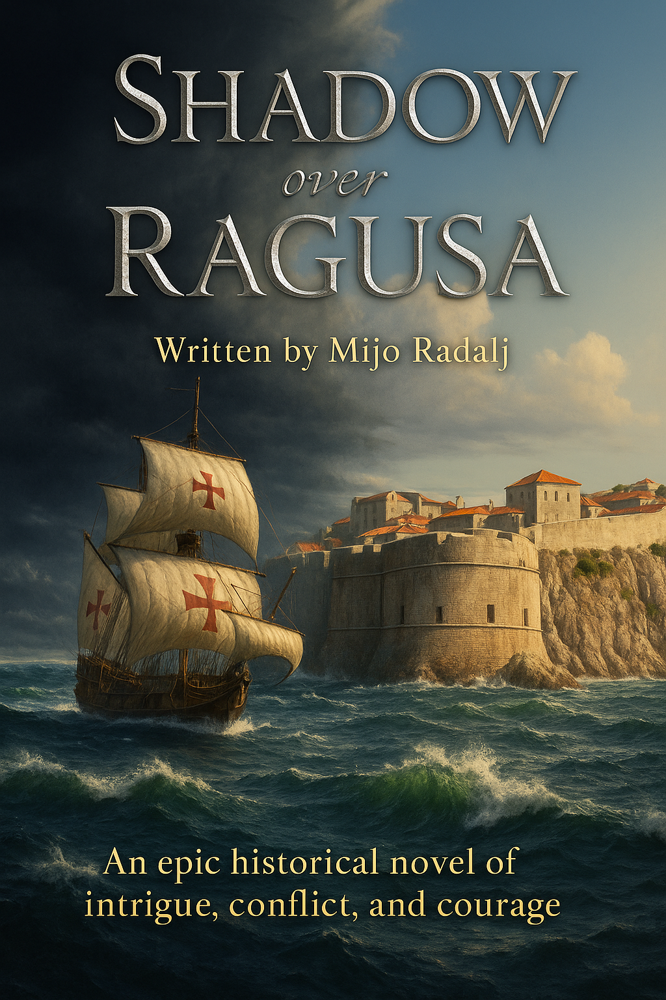

<section id="synopsis"><div class="container">
<h2>Synopsis</h2>

<div style="display:grid;grid-template-columns:360px 1fr;gap:26px;align-items:start">

  <!-- LEFT: COVER -->
  <div>
    <div class="frame">
      
    </div>
    <div class="caption">Cover art</div>
  </div>

  <!-- RIGHT: TEXT -->
  <div class="card">
    <p style="white-space:pre-wrap; margin:0;">
<span class="dropcap">C</span>enturies ago in Mediteranian Adriatic sea, the Republic of Ragusa achieved it's peak. Independance was made through diplomacy, trade, and patriotism. As Venetian pressure rose in their dream to conquer Ragusa once again, so did the fleet of new type of warships being built all over Italian ports.

Villa Marinowitch, residence of respected noble council member, Lord Ivano often held gatherings of his peers and their families, to wine and dine. On one such occation in Lord's library, few lords of council, Archbishup of Ragusa, held a discusdion of current political events. Once it was over, Master of Keys Luka, former guardian of Ragusa found a scroll dropped on the floor. Not by his intent, together with his friend Iva Lukich he was drawn into a web of secrets.

Following a mysterious scroll in search of a clue, trip to Lokrum Island reveals a hidden launch, a golden chained rosary, and a naked body concealed beneath broken boards. Troubling discovery soon unravels into a deeper conspiracy. From the ruined monastery to the very heart of the council chamber, Ragusa’s political status moves from relieving Venetian pressure.

With extra shipments of goods, the Church speaks in favour of Venetian states as Lord Ivano develops doubts. Admiralty counts ships and cannons, and the Council seeks balance under Duke Orlando. Yet beneath garden parties, lantern lit dinners, tensions begin to rise. Father Marko, Archbishup of Holly Church counsel carries hidden intent. Messages from beyond the sea whisper orders to spies. Rumors of red cloaked faces circle inside walls.

The Pope himself and his allie, Duke of Venice plan invasion as Luka’s patience and Iva’s courage lead them through markets, harbors, and shadowed paths as they uncover connections between clergy, foreign agents, and unseen forces.

Into this gathering storm sails Miho Lupina, a young officer whose sense of duty mirrors the city’s wisdom and strength. His presence brings both hope and valor, as growing affection binds emotions to the fate of Iva Lukich.

Suspicion deepens as danger closes in. Luka and Iva converge in a struggle where loyalty, truth, and cunningness may determine the future of a Republic standing on the edge of uncertainty.

Shadow over Ragusa blends mystery, romance, and political intrigue into the story of a small maritime republic caught between empires. Miho and Iva's pure love blooms strongly and leads them all the way to the Sultan's court, where an impossible choice awaits them.

This is the first title in a historical saga, followed by Republic in the Mist and Sunset of Liberty.
    </p>
  </div>

</div>

</div></section>
